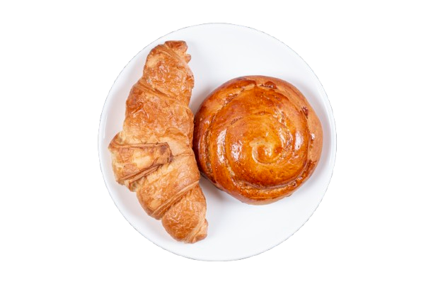

Discover exceptional artisan coffee and fresh pastries in the heart of Camden
Fresh Daily Pastries
Handcrafted croissants, muffins, and artisan breads baked fresh every morning
Premium Coffee Experience
Ethically sourced beans, expertly roasted and crafted by skilled baristas
Your Camden Community Hub
A warm, welcoming space to work, relax, and connect with fellow coffee lovers
Our Menu
Latte
Rich espresso with steamed milk
£3.20

Cappuccino
Espresso, steamed milk & frothy foam
£3.50
Croissant
Freshly baked buttery goodness
£2.50
About Coffico
Founded in Camden, Coffico is more than a coffee shop – it's a community hub.
We pride ourselves on serving ethically sourced artisan coffee, fresh pastries,
and providing a cozy space where everyone feels welcome.